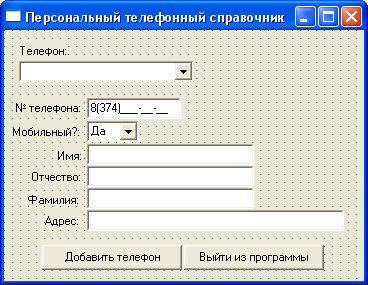

Динамические массивы (ч. 2)
Теперь рассмотрим на практике работу с динамическим массивом и напишем программу – телефонный справочник.
Создайте форму, наподобие такой:
Здесь у нас 7 компонентов Label, 2 ComboBox, 1 MaskEdit для ввода номера телефона и 4 Edit для ввода пользовательских данных.
Кроме того, 2 кнопочки с надписями "Добавить телефон" и "Выйти из программы".
В компоненте MaskEdit создайте маску для ввода телефона, наподобие указанной в рисунке, но с кодом своего города.
Расположите компоненты на форме так, как подсказывает вам дизайнерский вкус.
Верхний ComboBox будет нужен для выбора телефона из списка, чтобы сразу же высвечивались данные этой записи.
Проверьте свойство TabOrder всех компонентов для ввода, они должны идти один за другим при нажатии клавиши <Tab>.
Свойство TabOrder показывает индекс компонента на форме.
Тот компонент, у которого TabOrder равен 0, при открытии формы будет иметь фокус ввода, то есть, будет выделенным.
Когда пользователь нажмет клавишу <Tab>, выделение перейдет к компоненту с TabOrder равным 1, и так далее.
С помощью этого свойства мы можем указывать очередность выделения компонентов, как правило, она идет сверху - вниз, и слева - направо.
Разумеется, такие компоненты, как Label, фокуса ввода не имеют и у них отсутствует свойство TabOrder.
Форму переименуйте в fMain, модуль будет называться Main а проект – tfSprav.
Названия компонентов оставим по умолчанию, их не так много, и мы не запутаемся.
Установите форму в стиль bsDialog, а позицию – по центру экрана.
Прежде всего, нужно объявить глобальную запись для хранения необходимых данных, а также глобальный массив элементов типа этой записи.
В этот массив мы будем собирать данные, записывать их в файл и считывать из файла.
Он должен быть глобальным, чтобы мы могли работать с ним из всех процедур.
Поэтому выше раздела implementation пишем такой код:
type myTFSprav = record TelNum : String[15]; //номер телефона Mobil : Boolean; //мобильник – да? Нет? Imya : String[20]; //имя владельца телефона Otchestvo : String[20]; //его отчество Familiya : String[20]; //его фамилия Adres : String[50]; //его адрес end; //record var fMain: TfMain; sprav: array of myTFSprav; //объявляем динамический массив нашей записи
Как видите, мы указали немало полей в записи.
Однако, не все из них будут обязательны для заполнения.
Есть данные?
Запишем.
Нет?
Поля можно оставить пустыми.
Фактически, необходимыми записями являются только две – номер телефона и имя его владельца.
Номер телефона нам нужен, потому что это ведь телефонный справочник, и нет смысла в записи, если мы не указываем там поле с номером телефона.
Имя нам тоже необходимо, ведь зачем нам в файле номер телефона, если мы не знаем, чей это номер?
Сразу же создадим обработчик событий для кнопки "Выйти из программы".
Там пишем просто:
Close;
Далее обработаем кнопку "Добавить телефон".
В самом начале у нас ведь еще нет записей, поэтому первым делом пользователь введет парочку – другую телефонных номеров.
{Добавить телефон}
procedure TfMain.Button1Click(Sender: TObject);
var
i : Integer; //для счетчика записей
begin
{Проверяем обязательные параметры:}
//если номера телефона нет, выходим:
if MaskEdit1.Text = '8(374)- - - ' then begin //здесь введите свой код города
ShowMessage('Впишите номер телефона!');
MaskEdit1.SetFocus;
Exit;
end; //if
//если имени нет, выходим:
if Edit1.Text = '' then begin
ShowMessage('Впишите имя владельца телефона!');
Edit1.SetFocus;
Exit;
end; //if
//действительно ли пользователь хочет сохранить телефон?
if Application.MessageBox('Вы уверены, что хотите сохранить этот телефон?',
'Внимание!', MB_YESNOCANCEL+MB_ICONQUESTION)<> IDYES then Exit;
{Пользователь указал номер телефона и имя, и желает сохранить телефон
в список.}
//проверяем номер телефона на совпадение с имеющимися номерами,
//если там есть записи. Для проверки используем цикл, сверяем каждую запись.
//Если такая запись уже есть, сообщаем об этом и выходим из процедуры:
if length(sprav) > 0 then
for i := Low(sprav) to High(sprav) do
if sprav[i].TelNum = MaskEdit1.Text then begin
ShowMessage('Такой номер уже есть!');
Exit;
end; //if
//добавляем новый элемент к массиву:
SetLength(sprav, Length(sprav)+1);
//записываем новый телефон в список:
sprav[High(sprav)].TelNum := MaskEdit1.Text;
if ComboBox2.ItemIndex = 0 then
sprav[High(sprav)].Mobil := True
else sprav[High(sprav)].Mobil := False;
sprav[High(sprav)].Imya := Edit1.Text;
sprav[High(sprav)].Otchestvo := Edit2.Text;
sprav[High(sprav)].Familiya := Edit3.Text;
sprav[High(sprav)].Adres := Edit4.Text;
//очищаем поля на форме:
MaskEdit1.Text := '8(374)- - - ';
ComboBox2.ItemIndex := 0;
Edit1.Text := '';
Edit2.Text := '';
Edit3.Text := '';
Edit4.Text := '';
ShowMessage('Телефон '+ sprav[High(sprav)].TelNum + ' добавлен!');
//обновим ComboBox с телефонами:
ChangeCombo;
end;